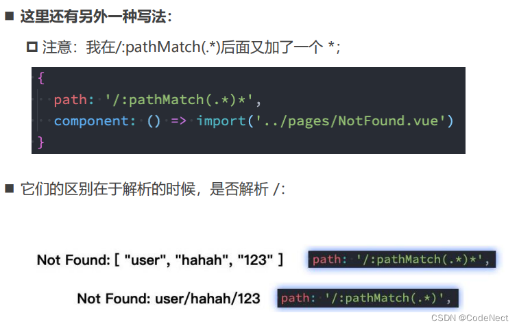
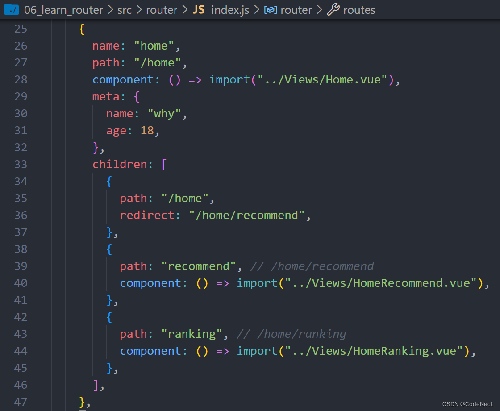
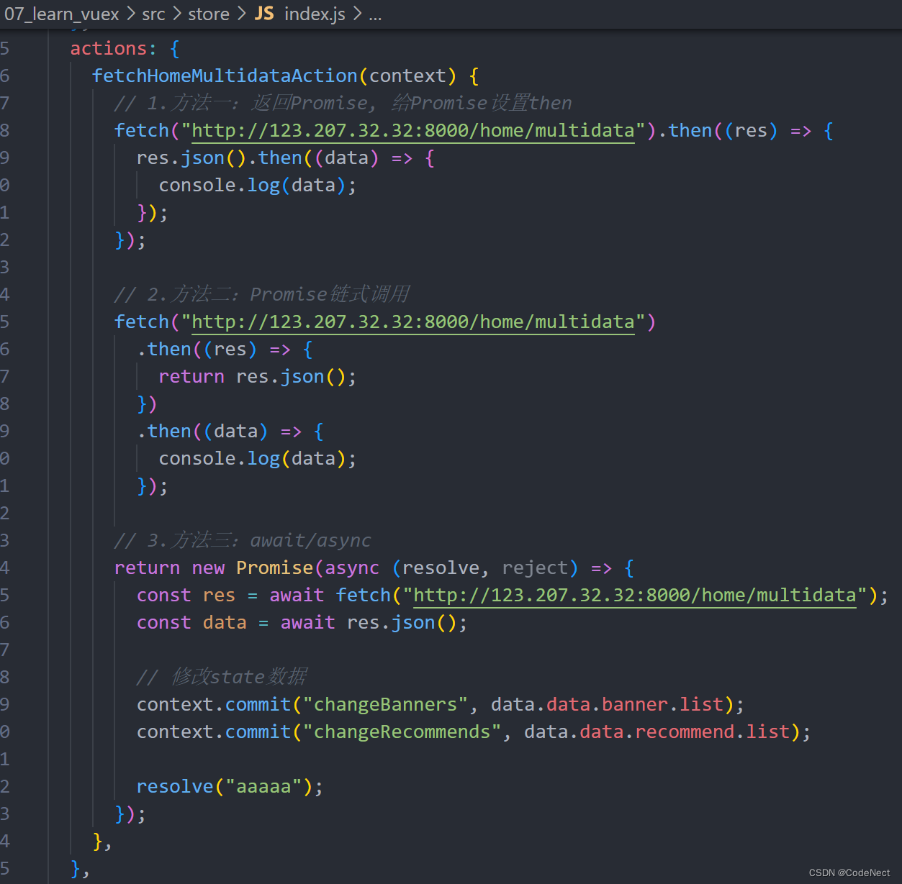

一、Vue-Router
1. 前端路由发展历程
==发展历程：==
- 后端路由：当我们页面中需要请求不同的路径内容时, 交给服务器来进行处理, 服务器渲染好整个页面, 并且将页面返回给客户端。
- 前后端分离：后端只提供API来返回数据，前端通过Ajax获取数据，并且可以通过JavaScript将数据渲染到页面中
- 单页面富应用：
- SPA：single page web application
- SPA最主要的特点就是在前后端分离的基础上加了一层前端路由。
- 前端路由
- 由前端来维护映射关系，在不同的URL显示不同的组件
- 核心：监听URL的改变，URL和内容进行映射
- SPA：single page web application
1.1 两种模式
hash模式：URL的hash也就是锚点(#), 本质上是改变window.location的href属性
history模式：history接口是HTML5新增的，通过一些模式函数来改变URL但不刷新页面
| hash | history |
|---|---|
| 有 # 号 | 没有 # 号 |
| 能够兼容到IE8 | 只能兼容到IE10 |
| 实际的url之前使用哈希字符，这部分url不会发送到服务器，不需要在服务器层面上进行任何处理 | 每访问一个页面都需要服务器进行路由匹配生成 html 文件再发送响应给浏览器，消耗服务器大量资源 |
| 刷新不会存在 404 问题 | 浏览器直接访问嵌套路由时，会报 404 问题。 |
| 不需要服务器任何配置 | 需要在服务器配置一个回调路由 |
2. vue-router 的使用过程
路由用于设定访问路径，将路径和组件映射起来
- 安装：
npm install vue-router
使用vue-router的步骤：
- 第一步：创建路由需要映射的组件（打算显示的页面）
- 第二步：通过createRouter创建路由对象，并且传入routes和history模式
routes：配置路由映射，组件和路径映射关系的routes数组
history：创建基于hash或者history的模式
- hash模式 :
history: createWebHashHistory()
- history模式:
history: createWebHistory()
- hash模式 :
- 第三步：使用app注册路由对象（use方法）
- 第四步：使用路径
- router-view: 占位
- router-link 进行路由的切换
- 编程式导航
- to 属性, 跳转到哪一个路由
2.1 vue-router 知识点补充
2.1.1 路由的默认路径
让路径默认跳到到首页
- path：配置的是根路径: /
- redirect：重定向，将根路径重定向到/home的路径下
2.1.2 router-link 其他属性
- to属性：指定跳转到哪个路由。是一个字符串，或者是一个对象
- replace属性： 设置 replace 属性的话，当点击时，会调用 router.replace()，而不是 router.push()。导航后不会留下history记录，也就是不能回退到上一个页面
- active-class属性：设置激活a元素后应用的class名称，默认是router-link-active
- exact-active-class属性：链接精准激活时，应用于渲染的 的 class，默认是router-link-exact-active
2.1.3 路由懒加载-分包处理
把不同路由对应的组件分割成不同的代码块，然后当路由被访问的时候才加载对应组件，这样就会更加高效
{ path: "/home", component: () => import(/* webpackChunkName: 'home' */"../Views/Home.vue") }
// webpackChunkName 规定分包后的文件名称2.1.4 其他属性
- name：路由记录独一无二的名称
- meta：自定义数据
3. 动态路由
如果需要将给定匹配模式的路由映射到同一个组件：可以在路径中使用一个动态字段来实现，我们称之为路径参数
在router-link中进行如下跳转：
获取动态路由中对应的值：
- 在template中，直接通过
$route.params获取值 - 在created中，通过
this.$route.params获取值 - 在setup中，我们要使用 vue-router库给我们提供的一个hook，useRoute
3.1 NotFound 页面匹配
没有匹配到的路由，我们通常会匹配到固定的某个页面：编写一个动态路由用于匹配所有页面
通过 $route.params.pathMatch获取到传入的参数：
ps：另一种写法

4. 路由的嵌套
会出现多层路由嵌套的情况：
- 在一层路由Home中添加 children属性：
- 在Home组件中添加
<router-view> - 路径跳转
<router-link>

5. 路由的编程式导航
5.1 代码的页面跳转
希望实现其他元素（按钮、span等）的跳转，可以通过 useRouter 来获取
通过query的方式来传递参数，在界面中通过 $route.query 来获取参数
// App.vue
router.push({}) 中可传递参数
5.2 页面的前进后退
- back()：回溯历史，相当于 router.go(-1)
- forward()：在历史中前进，相当于 router.go(1)
- go(number)
6. 动态管理路由对象
某些情况下我们可能需要动态的来添加路由：
- 比如根据用户不同的权限，注册不同的路由（后台管理系统）

6.1 动态添加路由
- 我们可以使用一个方法 addRoute
- 如果我们是为route添加一个children路由，那么可以传入对应的name
6.1.1 管理路由的其他方法（了解）
删除路由有以下三种方式：
- 方式一：添加一个name相同的路由
- 方式二：通过removeRoute方法，传入路由的名称
- 方式三：通过addRoute方法的返回值回调
路由的其他方法补充：
- router.hasRoute()：检查路由是否存在。
- router.getRoutes()：获取一个包含所有路由记录的数组
7. 路由导航守卫
导航守卫主要用来通过跳转或取消的方式守卫导航
7.1 beforeEach
全局的前置守卫beforeEach在导航触发时被回调：
- 它有两个参数：
- to：即将进入的路由Route对象
- from：即将离开的路由Route对象
- 它有返回值：
- false：取消当前导航
- 不返回或者undefined：进行默认导航
- 返回一个路由地址：
- 可以是一个string类型的路径
- 可以是一个对象，对象中包含path、query、params等信息
- 可选的第三个参数：next（不推荐使用）
- 在Vue2中我们是通过next函数来决定如何进行跳转的
- 但是在Vue3中我们是通过返回值来控制的，不再推荐使用next函数，这是因为开发中很容易调用多次next
7.2 登录守卫功能
- 跳转order组件时, 判断用户是否登录
- 没有登录：
- 跳到登录页面
- 进行登录的操作
- 在浏览器localStorage保存token
- 已登录/登录成功：
- 跳到order页面
- 没有登录：
7.3 路由导航的流程解析（了解）
完整的导航解析流程：
- 导航被触发。
- 在失活的组件里调用 beforeRouteLeave 守卫。
- 调用全局的 beforeEach 守卫。
- 在重用的组件里调用 beforeRouteUpdate 守卫(2.2+)。
- 在路由配置里调用 beforeEnter。
- 解析异步路由组件。
- 在被激活的组件里调用 beforeRouteEnter。
- 调用全局的 beforeResolve 守卫(2.5+)。
- 导航被确认。
- 调用全局的 afterEach 钩子。
- 触发 DOM 更新。
- 调用 beforeRouteEnter 守卫中传给 next 的回调函数，创建好的组件实例会作为回调函数的参数传入
二、Vuex 状态管理
1. 理解状态管理
在开发中，应用程序需要处理各种各样的数据，这些数据需要保存在应用程序中的某一个位置。对于这些数据的管理我们就 称之为是状态管理。
随着发展，JavaScript需要管理的状态越来越多，越来越复杂
- 这些状态包括服务器返回的数据、缓存数据、用户操作产生的数据等等
- 也包括一些UI的状态，比如某些元素是否被选中，是否显示加载动效，当前分页
- 多个组件还会共享状态
此时我们==将组件的内部状态抽离出来==，以一个全局单例的方式来管理
- 在这种模式下，我们的组件树构成了一个巨大的 “试图View”
- 不管在树的哪个位置，任何组件都能获取状态或者触发行为
- 通过定义和隔离状态管理中的各个概念，并通过强制性的规则来维护视图和状态间的独立性，我们的代码会变得更加结构化和易于维护、跟踪
2. Vuex 基本使用
- 安装vuex：
npm install vuex
2.1 创建 store
Vuex应用的核心就是store（仓库）：包含着应用中大部分的状态（state）
- 第一：Vuex的状态存储是响应式的
- 当Vue组件从store中读取状态的时候，若store中的状态发生变化，那么相应的组件也会被更新
- 第二：你不能直接改变store中的状态
- 改变store中的状态的唯一途径就显式提交 (commit) 至mutation
- 这样使得我们可以方便的跟踪每一个状态的变化，从而让我们能够通过一些工具帮助我们更好的管理应用的状态
2.2 组件中使用 store
在组件中使用store，有三种方式：
- 在模板中使用
- 在options api中使用，比如computed
- 在setup中使用
3. 核心概念一：state
Vuex 使用单一状态树，便于维护：
- 用一个对象就包含了全部的应用层级的状态
- 这也意味着，每个应用将仅仅包含一个 store 实例
3.1 基本使用
见 2.2
3.2 映射使用
如果我们有很多个状态都需要获取，可以使用mapState的辅助函数：
- mapState的方式一：对象类型
- mapState的方式二：数组类型
- 也可以使用展开运算符和原有的computed混合在一起
分为在options api中使用 & 在setup中使用
<template>
<div class="app">
<button @click="incrementLevel">修改level</button>
<!-- 1.在模板中直接使用多个状态 -->
<!-- <h2>name: {{ $store.state.name }}</h2>
<h2>level: {{ $store.state.level }}</h2>
<h2>avatar: {{ $store.state.avatarURL }}</h2> -->
<!-- 2.计算属性(映射状态: 数组语法) -->
<h2>name: {{ name() }}</h2>
<h2>level: {{ level() }}</h2>
<!-- 3.计算属性(映射状态: 对象语法) -->
<h2>name: {{ sName }}</h2>
<h2>level: {{ sLevel }}</h2>
<!-- 4.setup计算属性(映射状态: 对象语法) -->
<h2>name: {{ cName }}</h2>
<h2>level: {{ cLevel }}</h2>
<!-- 5.setup计算属性(映射状态: 对象语法) -->
<h2>name: {{ name }}</h2>
<h2>level: {{ level }}</h2>
</div>
</template>
<script>
import { mapState } from "vuex";
export default {
computed: {
fullname() {
return "xxx";
},
...mapState(["name", "level", "avatarURL"]),
...mapState({
sName: (state) => state.name,
sLevel: (state) => state.level,
}),
},
};
</script>
<script setup>
import { computed, toRefs } from "vue";
import { mapState, useStore } from "vuex";
import useState from "../hooks/useState";
// 1.一步步完成
// const { name, level } = mapState(["name", "level"])
// const store = useStore()
// const cName = computed(name.bind({ $store: store }))
// const cLevel = computed(level.bind({ $store: store }))
// 2.使用useState
// const { name, level } = useState(["name", "level"])
// 3.直接对store.state进行解构(推荐)
const store = useStore();
const { name, level } = toRefs(store.state);
function incrementLevel() {
store.state.level++;
}
</script>4. 核心概念二：getter
4.1 基本使用
某些属性我们可能需要经过变化后来使用，这个时候可以使用getters
- 第一个参数：state
- 第二个参数：getter
- 返回值：可以返回一个函数，在使用的地方相当于可以调用这个函数
4.2 映射使用
如果有多个getter中的函数需要获取，可以使用mapGetters的辅助函数：
<template>
<div class="app">
<button @click="changeAge">修改name</button>
<h2>doubleCounter: {{ doubleCounter }}</h2>
<h2>friendsTotalAge: {{ totalAge }}</h2>
<h2>message: {{ message }}</h2>
<!-- 根据id获取某一个朋友的信息 -->
<h2>id-111的朋友信息: {{ getFriendById(111) }}</h2>
<h2>id-112的朋友信息: {{ getFriendById(112) }}</h2>
</div>
</template>
<script>
import { mapGetters } from 'vuex'
export default {
computed: {
...mapGetters(["doubleCounter", "totalAge", "getFriendById"])
}
}
</script>
<script setup>
import { computed, toRefs } from 'vue';
import { mapGetters, useStore } from 'vuex'
const store = useStore()
// 1.使用mapGetters
// const { message: messageFn } = mapGetters(["message"])
// const message = computed(messageFn.bind({ $store: store }))
// 2.直接解构, 并且包裹成ref(会报警告)
// const { message } = toRefs(store.getters)
// 3.针对某一个getters属性使用computed（推荐）
const message = computed(() => store.getters.message)
function changeAge() {
store.state.name = "kobe"
}
</script>5. 核心概念三：mutations
更改 Vuex 的 store 中的状态的==唯一方法==是提交 mutation
5.1 基本使用
- 支持传入参数
- Mutation常量类型：为防止在两个文件中的Mutation名称拼写错误，可以将名称定义为一个常量，存入一个mutation-type.js文件中
5.2 映射使用
如果有多个mutation中的函数需要获取，可以使用mapMutations的辅助函数：
<template>
<div class="app">
<button @click="changeName('王小波')">修改name</button>
<button @click="incrementLevel">递增level</button>
<button @click="changeInfo({ name: '王二', level: 200 })">修改info</button>
<h2>Store Name: {{ $store.state.name }}</h2>
<h2>Store Level: {{ $store.state.level }}</h2>
</div>
</template>
<script>
import { mapMutations } from "vuex";
import { CHANGE_INFO } from "@/store/mutation_types";
export default {
computed: {},
methods: {
btnClick() {
console.log("btnClick");
},
...mapMutations(["changeName", "incrementLevel", CHANGE_INFO]),
},
};
</script>
<script setup>
import { mapMutations, useStore } from "vuex";
import { CHANGE_INFO } from "@/store/mutation_types";
const store = useStore();
// 1.手动的映射和绑定
const mutations = mapMutations(["changeName", "incrementLevel", CHANGE_INFO]);
const newMutations = {};
Object.keys(mutations).forEach((key) => {
newMutations[key] = mutations[key].bind({ $store: store });
});
const { changeName, incrementLevel, changeInfo } = newMutations;
</script>5.3 重要原则
一条重要的原则就是要记住 mutation 必须是同步函数
- 这是因为devtool工具会记录mutation的日记
- 每一条mutation被记录，devtools都需要捕捉到前一状态和后一状态的快照
- 但是在mutation中执行异步操作，就无法追踪到数据的变化
6. 核心概念四：actions
6.1 基本使用
Action类似于mutation，不同在于：
- Action提交的是mutation，而不是直接变更状态
- Action可以包含任意异步操作
参数context：
- context是一个对象，和store实例有相同方法和属性
- 所以我们可以从其中获取到commit方法来提交一个mutation，或者通过 context.state 和 context.getters 来获取 state 和 getters
6.2 映射使用

6.3 actions 的异步操作
通常应用于发送网络请求：

实例：渲染页面banner
- home.vue -> home.js -> actions发送请求
7. 核心概念五：modules
- 由于使用单一状态树，应用的所有状态会集中到一个比较大的对象，当应用变得非常复杂时，store 对象就有可能变得相当臃肿
- 为了解决以上问题，Vuex 允许我们将 store 分割成模块（module）
- 每个模块拥有自己的 state、mutation、action、getter、甚至是嵌套子模块
7.1 module 的基本使用
- 抽取到独立对象counter.js：
- state
- mutations
- getters
- action
- modules: { home: 对象 }
- 在根文件index.js中引用
- 使用state时，需要指明模块
- 使用getters时，不需要
- 使用commit时，不需要
- 使用dispatch时，不需要
7.2 module 的命名空间
默认情况下，模块内部的action和mutation仍然是注册在全局的命名空间中的，这样使得多个模块能够对同一个 action 或 mutation 作出响应。==此时需要注意，模块中定义的名称不要和根模块进行重复==
如果我们希望模块具有更高的封装度和复用性，可以添加 namespaced: true 的方式使其成为带命名空间的模块
- getters[“home/xxx”]
- commit(“home/xxx”)
- dispatch(“home/xxx”)
三、Pinia 的使用
1. Pinia 的介绍和 Vuex 的区别（面试）
- pinia是一个用于对状态进行管理的库，跨组件跨页面对状态进行共享
- 与vuex和redux在作用上并无区别
- 核心区别
- pinia没有mutations选项，因为mutations的出现解决的问题是让devtools进行状态追踪
- 我们可以在任意组件中拿到store然后直接修改state中的任意值
- 不再需要modules这样的嵌套结构，取而代之的是可以创建一个个store
- 可以在一个组件中拿任意数量的store
- 除此之外你还可以在某个store中拿另外的store，然后使用store中的任何东西
- pinia没有mutations选项，因为mutations的出现解决的问题是让devtools进行状态追踪
- 使用上的区别
- 使用state
- 在vuex中使用某个state时，需要$store.state.xxx
- 在pinia中直接拿到store之后store.xxx即可
- 使用getter
- 在vuex中使用某个getter函数时，需要$store.getters.xxx
- 在pinia中拿到store后，store.xxx即可
- 使用action
- 在vuex中进行异步请求需要派发action函数
- 在pinia中拿到store后，直接调用action函数即可
- 使用state
2. Pinia 的安装和基本使用
- 安装：
npm install pinia
- 在根文件中createPinia
- app.use
2.1 定义一个 store
- store 是使用 defineStore() 定义的
- 并且它需要一个唯一名称，作为第一个参数传递

2.2 使用定义的 store
- 可以通过调用use函数来使用store
- 为了从 Store 中提取属性同时保持响应式，您需要使用storeToRefs()
3. Pinia 核心一：state
<template>
<div class="home">
<h2>Home View</h2>
<h2>name: {{ name }}</h2>
<h2>age: {{ age }}</h2>
<h2>level: {{ level }}</h2>
<button @click="changeState">修改state</button>
<button @click="resetState">重置state</button>
</div>
</template>
<script setup>
import useUser from "@/stores/user";
import { storeToRefs } from "pinia";
const userStore = useUser();
const { name, age, level } = storeToRefs(userStore);
function changeState() {
// 1.一个个修改状态
userStore.name = "kobe";
userStore.age = 20;
userStore.level = 200;
// 2.一次性修改多个状态
// userStore.$patch({
// name: "james",
// age: 35
// })
// 3.替换state为新的对象
// const oldState = userStore.$state
// userStore.$state = {
// name: "curry",
// level: 200
// }
// console.log(oldState === userStore.$state) // true
}
function resetState() {
userStore.$reset();
}
</script>4. Pinia 核心二：getters
- getters中可以定义接受一个state作为参数的函数
- getters访问自己的其他getters：通过==this来访问到当前store实例的所有其他属性==（this是store实例）
- getters中可以访问其他store的getter
// 定义关于counter的store
import { defineStore } from "pinia";
// 引入其他module
import useUser from "./user";
const useCounter = defineStore("counter", {
state: () => ({
count: 99,
friends: [
{ id: 111, name: "why" },
{ id: 112, name: "kobe" },
{ id: 113, name: "james" },
],
}),
getters: {
// 1.基本使用
doubleCount(state) {
return state.count * 2;
},
// 2.一个getter引入另外一个getter
doubleCountAddOne() {
// this是store实例
return this.doubleCount + 1;
},
// 3.getters也支持返回一个函数
getFriendById(state) {
return function (id) {
for (let i = 0; i < state.friends.length; i++) {
const friend = state.friends[i];
if (friend.id === id) {
return friend;
}
}
};
},
// 4.getters中用到别的store中的数据
showMessage(state) {
// 1.获取user信息
const userStore = useUser();
// 2.拼接信息
return `name:${userStore.name}-count:${state.count}`;
},
},
actions: {
increment() {
this.count++;
},
incrementNum(num) {
this.count += num;
},
},
});
export default useCounter;5. Pinia 核心三：actions
5.1 基本使用
在action中可以通过this访问整个store实例的所有操作
5.2 执行异步操作
四、axios 库
功能特点:
- 在浏览器中发送 XMLHttpRequests 请求
- 在 node.js 中发送 http请求
- 支持 Promise API
- 拦截请求和响应
- 转换请求和响应数据等等
相比与原生fetch，axios自动适配浏览器和node.js，同时还提供多种附加功能（拦截请求等）
1. axios 发送请求
1.1 axios 额外补充
- axios.defaults.baseURL
- axios.defaults.timeout/headers
- axios.all -> Promise.all
2. axios 创建实例
为什么需要创建实例
- 当我们从axios模块中导入对象时, 使用的实例是默认的实例
- 当给该实例设置一些默认配置时, 这些配置就被固定下来了。
- 但是后续开发中, 某些配置可能会不太一样。比如某些请求需要使用特定的baseURL或者timeout等.
- 这个时候, 我们就可以创建新的实例, 并且传入属于该实例的配置信息
- 当我们从axios模块中导入对象时, 使用的实例是默认的实例
axios.create()
3. axios 的拦截器
axios的也可以设置拦截器：拦截每次请求和响应
- axios.interceptors.request.use(请求成功拦截, 请求失败拦截)
- axios.interceptors.response.use(响应成功拦截, 响应失败拦截)
4. axios 的简洁封装
在项目中，我们会在多个地方使用到axios进行网络请求。但如果axios库发生停止维护的情况时，需要利用别的库进行替代。
此时一一替换非常不方便，因此我们事先对axios进行封装。
在service文件夹中index.js进行封装
使用时引入该文件即可：

五、项目实战
1. 项目准备
1.1 项目目录结构划分
1.2 CSS样式的重置
对默认CSS样式进行重置:
- common.css
- reset.css
- index.css：所有css文件的接口
1.3 路由配置和状态管理
2. Tips
- 动态绑定图片的相对路径，需要使用getAssetURL()
封装一个工具utils：
// load_assets.js
export const getAssetURL = (image) => {
// 参数一: 相对路径
// 参数二: 当前路径的URL
return new URL(`../assets/img/${image}`, import.meta.url).href
}<template>
<img :src="getAssetURL(item.image)" alt="" />
</template>
<script setup>
import { getAssetURL } from "@/utils/load_assets.js";
</script>- 善用组件库
http://vant-contrib.gitee.io/vant/v3/#/zh-CN/quickstart
- 使一整页（city模块）覆盖掉底部的tab-bar：
封装一个class到common.css中
.top-page {
position: relative;
z-index: 9;
height: 100vh;
background-color: #fff;
overflow-y: auto;
}使用时直接添加top-page即可
- 滑动city模块中的content，固定top组件
.city {
// 布局滚动
.content {
height: calc(100vh - 98px); // 98px为top的高度
overflow-y: auto;
}
}- 请求数据
<!-- city.vue -->
// 从Store中获取数据
const cityStore = useCityStore()
cityStore.fetchAllCitiesData()
const { allCities } = storeToRefs(cityStore)
<!-- store->modules->city.js -->
import { getCityAll } from "@/services";
import { defineStore } from "pinia";
const useCityStore = defineStore("city", {
state: () => ({
allCities: {},
currentCity: {
cityName: "广州"
}
}),
// 通过axios发送数据请求，得到的数据存储在store中
actions: {
async fetchAllCitiesData() {
const res = await getCityAll()
this.allCities = res.data
}
}
})
export default useCityStore
<!-- services->modules->city.js -->
// 通过axios发送数据请求
import hyRequest from '../request' // 对axios组件的再封装
export function getCityAll() {
return hyRequest.get({
url: "/city/all"
})
}格式化日期：npm install dayjs
防抖/节流函数：npm install underscore